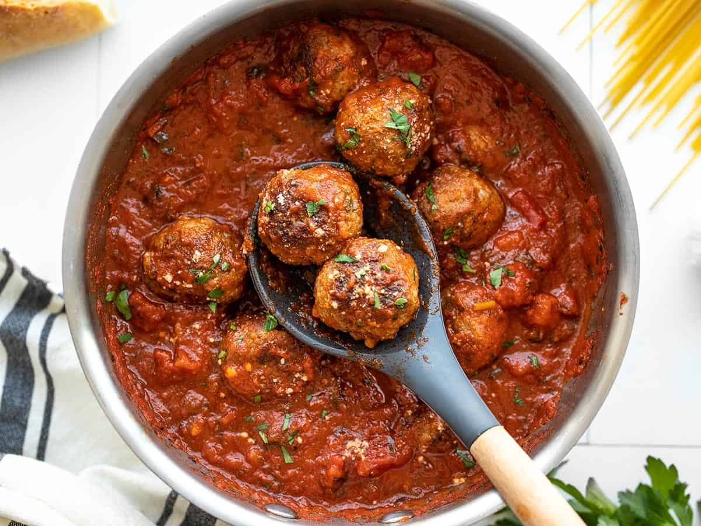

Meatballs

This fun recipe will have you becoming the meatball master
to make quick meatballs for any type of dish!
Ingredients
- Ground Meat: This meatball recipe uses a blend of ground beef, ground veal, and ground pork. You can switch it up depending on what you have on hand
- Seasonings and Herbs: These meatballs are flavored with fresh garlic, fresh Italian flat-leaf parsley, and ground black pepper
- Eggs: Eggs keep the meatballs from drying out and they act as a binding agent, which means they help hold the ingredients together
- Cheese: You'll need a cup of freshly grated Romano cheese. If you can, avoid the pre-grated stuff for this recipe
- Italian Bread: Slightly stale Italian bread is preferable. If your bread feels soft, try letting it sit out overnight
- Water: Slowly add water to the mixture before you roll the meatballs. It'll keep the meatballs nice and moist. Some reviewers prefer to use milk
- Olive Oil: Fry the meatballs in olive oil
Steps
How to Make Meatballs Step-By-Step
Here's a very brief overview of what you can expect when you make this top-rated meatball recipe:
- Combine the the first eight ingredients in a bowl
- Add the bread crumbs and slowly add the water
- Shape the mixture into meatballs
- Fry the meatballs until they're all brown and crisp
How to Cook Meatballs
- Cook in batches, making sure you don't crowd the pan
- It should take about 20 minutes in the oven
- Use an instant read thermometer to test the temp (Should read 165 degrees F)
- Let cool and serve!
ENJOY!